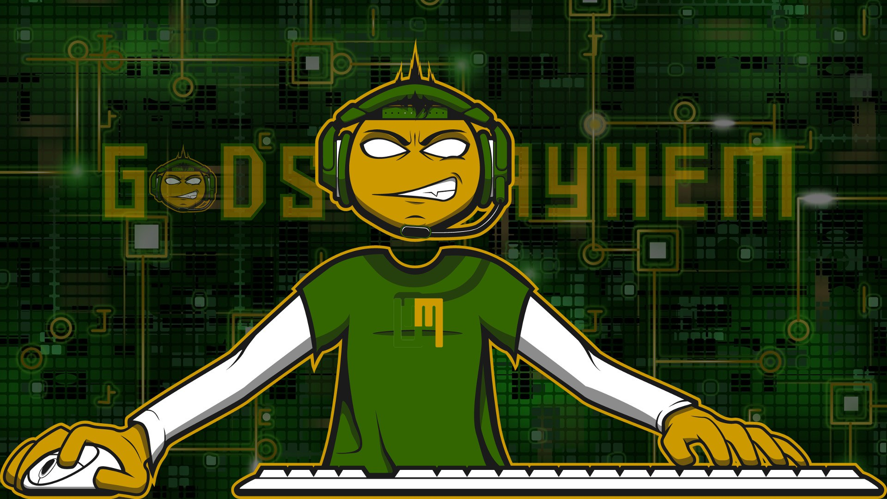

Voluntary collaboration. Real responsibilities. Absolutely excessive department names.

GODS OF MAYHEMChaos is inevitable. Incompetence is optional.
01 / A respectable history of questionable decisions
Founded in 2013. Still not taking ourselves too seriously.
Gods of Mayhem began as a League of Legends team in 2013. Today, it is Loptr Lab’s competitive esports division, preparing its next initiative around Veiled Dominion.
The history stays. The arena evolves. We’re bringing together the people who can turn competitive ambition into something accessible, accountable and worth showing up for.
Veiled Dominion is an asymmetric four-player strategy game on a cross-shaped chess board. Its rules explore leadership, sacrifice and the consequences of power.
One player controls Rebirth. The other three must respond to her asymmetric power. The documented design rewards more than conquest: restraint and strategic cooperation matter.
The four-player game is in development. Ranked play, matchmaking and scheduled tournaments are not available here.
We’re recruiting people to help build competitive practice—not announcing a finished league.
03 / Play before you pledge
Build a board. Find three rivals. Become a Demi-god.
You do not need a subscription, an official kit or permission to test a game at your kitchen table. Start with what you have, then show the community what worked.
Demi-gods are the people who playtest, teach, document, form teams and help others join in. This is an informal community identity, not a purchased rank, official appointment or governance privilege.
Contribute only if you can afford to
Do not volunteer money or time you need for your own security. Your rent, food, healthcare, dependents, benefits and paid work come first. Playing, reading and reporting a bug are welcome without any financial commitment; taking on a recurring role is different.
Organized contributors should have a sustainable way to participate: spare time they can genuinely donate to teaching or testing; a realistic budget to sponsor an intern stipend, accessible materials or a merchandise drop; or a clearly scoped portfolio project that supports an employment goal without jeopardizing unemployment benefits or other assistance. Benefits eligibility and reporting rules vary: check the applicable agency requirements before taking on unpaid work. We do not request financial records or benefits information.
No freeloading on other people's labor, no clout chasing, no pay-to-lead. Propose a concrete contribution, respect the agreed scope, credit others, and hand off what you build. Sponsorship never purchases editorial control, leadership, canon authority or private access. No one owes us free labor, and no one should be pressured to contribute.
Tier 0 / Free
Sketch the arena
Use scrap paper, a pencil, household tokens and the canonical four-player rulebook. Draw the 14×14 cross-shaped board and label four armies. Keep a notebook for Veiled status, Boon Tokens and Leadership Points.
Start with a rules walkthrough, even if you do not yet have four players.
Tier 1 / $5 target
Dollar-store dominion
Use inexpensive paper, markers and distinguishable tokens or secondhand chess pieces. Assign unique letters or shapes as well as colors. The $5 target is a challenge, not a guaranteed retail price or a required purchase.
Find four players: one Rebirth and three Mortal factions. Run a short playtest and record confusing turns.
Tier 2 / Reuse what you own
Prototype laboratory
Use existing chess sets, cardboard tiles or a reusable board. Add removable status markers and a visible 0–10 Leadership Point tracker. Try repeatable scenarios and note where the rules need clarification.
Keep proposed house rules separate from canonical results.
Tier 3 / Community workshop
Make your own concept version
Form a team, design accessible physical components, and share original variant concepts. The Game Crafter specification is an optional production reference, not a purchase requirement.
Clearly label experimental variants. Do not claim they replace the official rules or reuse reserved art without permission.
Your first playtest
Read the four-player rules and draw or assemble the cross-shaped board.
Assign one Rebirth player and three Mortal players; distinguish pieces by more than color.
Track turns, Veiled status, Boon Tokens and Leadership Points on paper.
Record unclear moves, accessibility barriers, game length and what made play fun or frustrating.
Share a reproducible report or proposed change in the public repository. Do not publish personal information about teammates.
This is a low-cost prototype pathway, not a complete printable kit. The rulebook's unresolved Rebirth immunity question remains unresolved; report it rather than silently rewriting the rules.
People keep games alive
When games shut down, communities can lose access to worlds they helped make meaningful. Gods of Mayhem should prioritize portable rules, community testing and documented contributions rather than dependence on a single commercial service.
Our standard: players should be able to keep playing with ordinary materials. Any broader promise to fork, redistribute or independently maintain software or branded materials depends on their actual licenses and rights.
We are building a community that can sustain the practice, not selling access to belonging.
Buy Me a Coffee supports Loptr Lab's creative and lore work; its current membership rewards are not Gods of Mayhem ranks or private-access privileges. Patreon is the destination for technical-development support and updates. Support is optional and never required to play, contribute or be heard.
Community investment / Proposed model, not funded commitments
Corporate capacity should build community capacity.
Our long-term direction is an accessible rehabilitation-to-income model: affordable education, voluntary portfolio development, compensated work and greater financial independence, informed by the goal of a workable universal-income model. This is an aspiration, not an existing benefits program, guaranteed employment, universal basic income payment or licensed rehabilitation service.
The existing Loptr Lab sponsorship strategy proposes corporate tiers of $250, $500 and $1,000+ per month. These are proposed sponsorship prices, not confirmed corporate payments. The following percentages are an illustrative gross-revenue allocation, subject to approved budgets, fees, taxes and sponsor agreements.
Illustrative allocation of monthly sponsorship revenue
Authorized purpose
Share
$250
$500
$1,000
Paid learner and intern stipends
40%
$100
$200
$400
Accessible education and materials
25%
$62.50
$125
$250
Teaching and mentorship compensation
15%
$37.50
$75
$150
Community playtests and merchandise prototypes
10%
$25
$50
$100
Infrastructure, administration and accountability
10%
$25
$50
$100
Permitted with approval
Accessible, low-cost learning materials; documented teaching and mentorship; appropriately contracted and budgeted paid internships; participant-controlled portfolio projects; accessible playtest supplies; approved, costed merchandise prototypes; necessary project operations and transparent reporting. Larger projects may accumulate funds until fully financed.
Stipends and paid roles require employment classification, tax, benefit and legal review before offers. Participants decide whether an opportunity fits their circumstances; we do not request proof of disability, benefit status or personal financial hardship.
Not acceptable
Uncompensated work disguised as a job; pressuring people to spend disability or unemployment benefits; guaranteed income or employment claims; payment for Demi-god status, governance votes, canon control, private access or competitive advantage; undisclosed personal spending; unapproved IP or merchandise rights; misleading sponsorship claims; speculative purchases without a budget; and using contributors' stories or disabilities as marketing without informed permission.
People first: someone on a fixed income must be able to learn, play and build a portfolio without paying. Corporate sponsors who have the means should carry more of the cost, without acquiring control of the community.
04 / Choose your department. Accept some responsibility.
Four departments. One very real standard.
Show your work. Respect the people. Be willing to change your mind. These are collaboration categories, not advertised jobs.
I / Strategy & playtesting
Department of Questionable Decisions
Competitive strategists, captains and playtest leaders.
The actual work: prepare test scenarios, document decisions, study balance questions and make room for different ways to play.
Bring: a strategy or team-organizing example, a bounded test idea and time you can realistically offer.
The ambition is theatrical. The expectations are plain.
Who should contribute?
People with relevant experience—or a concrete proposal—in strategy communities, competitive organization, development, design or accessible participation who can afford the time or resources they offer. A large following is not a substitute for a useful contribution.
What does participation involve?
A bounded task, realistic availability, documented work, respectful feedback and a clear handoff. Agree the scope, time, credit, rights, public visibility and exit arrangements before starting. You can stop participating.
Is this paid?
Current open review and contribution opportunities are voluntary and unpaid. No future pay, employment, ownership or revenue share is promised. Paid work requires a separate signed agreement.
How does review work?
Begin through the public GitHub contribution pathway. Propose one bounded contribution, document your work and agree on scope, credit, rights and exit terms before starting. Public discussion is the default; participation does not grant membership or leadership.
Playtest eligibility, competitive selection and leadership appointments are not automatic. Their detailed procedures must be established before a cohort or event is confirmed. There is no response-time or acceptance guarantee.
What happens to my information?
This page does not collect applications, create member records or provide private messaging. Public contributions are visible to others. Never publish personal identification documents, medical records, financial details or private information about other people.
Email is reserved for data privacy communications, not recruitment or introductions. Contact with celebrities and other public figures must begin through an appropriate official public channel; no unsolicited email or private messages. Private conversations are exceptional, not a recruitment perk. Germ Network is the designated private channel only after account-control verification, a reviewed substantial contribution and explicit invitation. Verification does not establish trust or grant access.
Illustrative concepts. Unavailable for purchase. These are fictional crowdfunding ideas, not approved Kickstarter rewards. There is no checkout, pledge, deposit, reservation or subscription.
$5
Officially Acknowledged
In this imaginary hierarchy, we concede that you exist. A considerable administrative achievement.
$25
Minor Deity, Probationary
A fictional title with all the authority of a particularly confident sticky note.
$100
Executive-Level Nuisance
Conceptually entitled to an impressive amount of ceremonial eye-rolling.
$500
Supreme Architect of Bad Ideas
A purely hypothetical seat at a table we have not budgeted for.
Support would never purchase leadership, membership, competitive advantage or accessibility. Any future campaign needs separate approved terms, budgets and fulfillment plans.
07 / Your move · Build in public
Think you can manage mayhem?
Show your work.
Join the open development conversation. Start with a bounded proposal, playtest observation, accessibility finding or contribution you can deliver. No private application or personal data is required.
Public doors are open
GitHub — primary route. Read the rules, review existing issues and contribute through the repository's public process. A contribution is not automatic team membership.
LinkedIn — public introductions. Use public posts or comments through an official account; do not send unsolicited private messages or share confidential information.
Private conversations are limited to Germ Network and are invitation-only, after verification of account control and review of a substantial contribution. Do not send unsolicited private messages. Identity verification does not establish personal trust, and no private access or reply is guaranteed.
Clay research is for qualification, not automatic invitations, email outreach, private contact enrichment or private messaging. Public invitations must be reviewed and approved before posting. No application database, messaging endpoint, or member acceptance service is connected here.